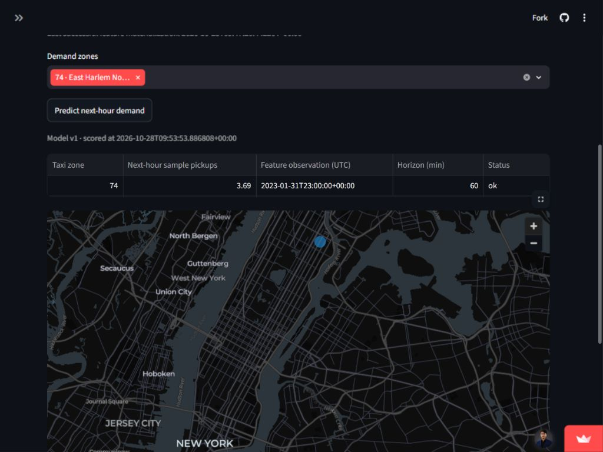
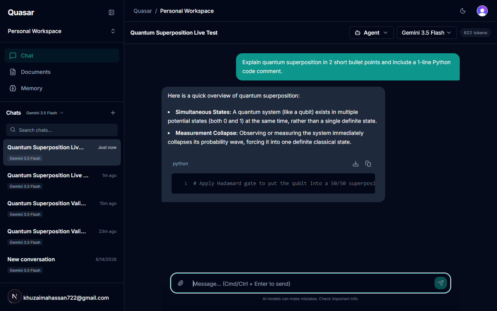
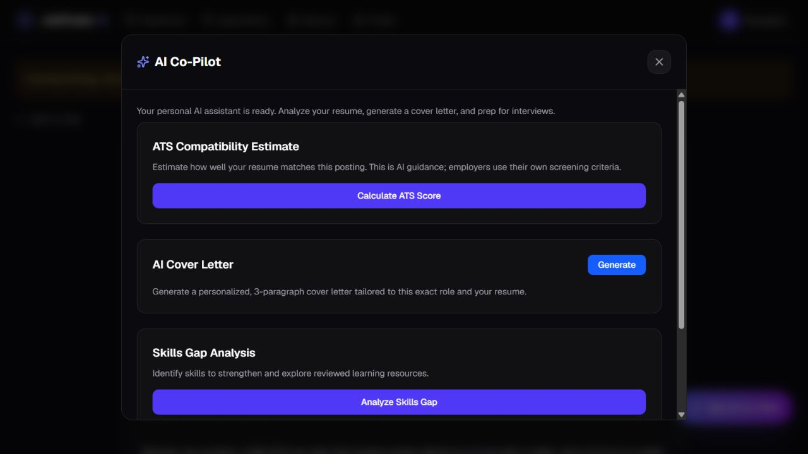
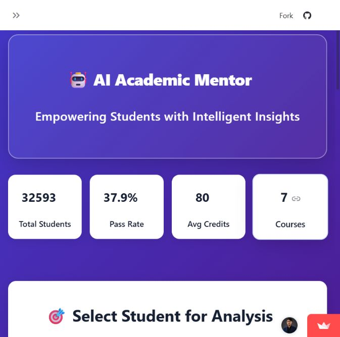

AI / ML Engineer · Data Science
Hi, I'm Khuzaima Hassan.
Open to opportunities
Turning data into useful AI applications.
I build machine learning pipelines and LLM applications, connecting models, APIs, and clear interfaces.
1st in Data Science at NED3.885 / 4.00 CGPA
Former Data Science Intern at 10Pearls
Selected work
From an idea to an application.
A few projects to start with. Explore the interfaces, then follow the source code and implementation notes.




Risk Scoring Platform
Transaction Scoring Demo
Educational demo connecting authenticated transaction scoring, historical features, saved prediction records, and a React analyst dashboard. Hosted scoring requires private administrator credentials; measured performance is documented in the repository.
Fraud Detection System
Classification Models
Financial fraud classification study with saved model comparisons and a Streamlit demo. The evaluation script loads existing classifiers; reproducing results requires the expected datasets and model artifacts.
Data Warehousing & BI
End-to-end ETL Architecture
E-commerce coursework covering ETL, dimensional modeling, clustering, and Power BI reporting. Existing warehouse results need customer-grain validation before they can support business conclusions.
Experience
Data Science Intern
10Pearls- Developed an ML-based Air Quality Index prediction system using Python for data preprocessing, feature engineering, and model training.
- Built an interactive application to visualize AQI predictions and environmental data insights.
Japanese Language & IT Intern
Plus W株式会社- Worked on database-related tasks to support backend development.
- Researched cloud deployment platforms suitable for hosting the database.
- Added unique constraints to database tables to ensure data integrity and prevent duplicate records.
- Wrote and executed database migration scripts to safely update existing tables.
About & skills
A practical approach to AI.
I am a Computer Science graduate from NED University, specializing in Data Science. I enjoy connecting machine learning and generative AI with the engineering that makes an application usable.
My work spans forecasting, fraud-risk scoring, data pipelines, and LLM assistants. At 10Pearls, I worked on data preparation, feature engineering, model development, and visualization.
I am looking for AI/ML Engineering, Data Science, and applied GenAI roles where I can build, learn, and contribute.
Tools I work with
Data & ML
Engineering
DevOps & Tools
Explore my areas of work
Machine Learning & Predictive Analytics
Building end-to-end machine learning solutions including classification, regression, fraud detection, risk scoring, and predictive analytics using Python, Scikit-learn, and modern data science workflows.
Generative AI & LLM Applications
Developing AI-powered applications using Gemini, Groq, Ollama, prompt engineering, and retrieval-augmented workflows to create intelligent assistants and data-driven solutions.
Data Science & Analytics
Transforming raw data into actionable insights through exploratory data analysis, feature engineering, statistical modeling, SQL, and interactive visualizations.
AI Application Development
Building and deploying AI solutions with FastAPI, Streamlit, PostgreSQL, and modern Python frameworks to deliver scalable and user-friendly applications.
Data Engineering & ETL
Designing robust data architectures and automated ETL pipelines using PostgreSQL, BigQuery, and Python to ensure seamless data flow.
Education
A foundation in data science.
Bachelor of Computer Science (Data Science Specialization)
NED University of Engineering & Technology- Graduated with CGPA 3.885/4.00 and secured 1st Position in the Data Science Batch 2022
- Completed a Data Science Internship at 10Pearls, working on machine learning and predictive analytics projects
- Developed AI/ML solutions including Fraud Detection Systems, Risk Scoring Platforms, AQI Prediction Models, and LLM-Powered Applications
- Strong foundation in Machine Learning, Generative AI, FastAPI, SQL, Data Engineering, and Applied Analytics
Earlier education
Intermediate
Adamjee Govt Science College- A-1 grade with 93.51% marks
Matriculation
Usman Public School System- Awarded consecutive shields for achieving A+ grades in all subjects
- Actively involved in cricket tournament at the school level
Continued learning
Credentials & certifications.
Machine Learning Scientist in Python
DataCamp
Contact
Let’s build something useful.
Contact Information
Feel free to reach out to me for any inquiries or project collaborations. I'm always open to discussing new opportunities.